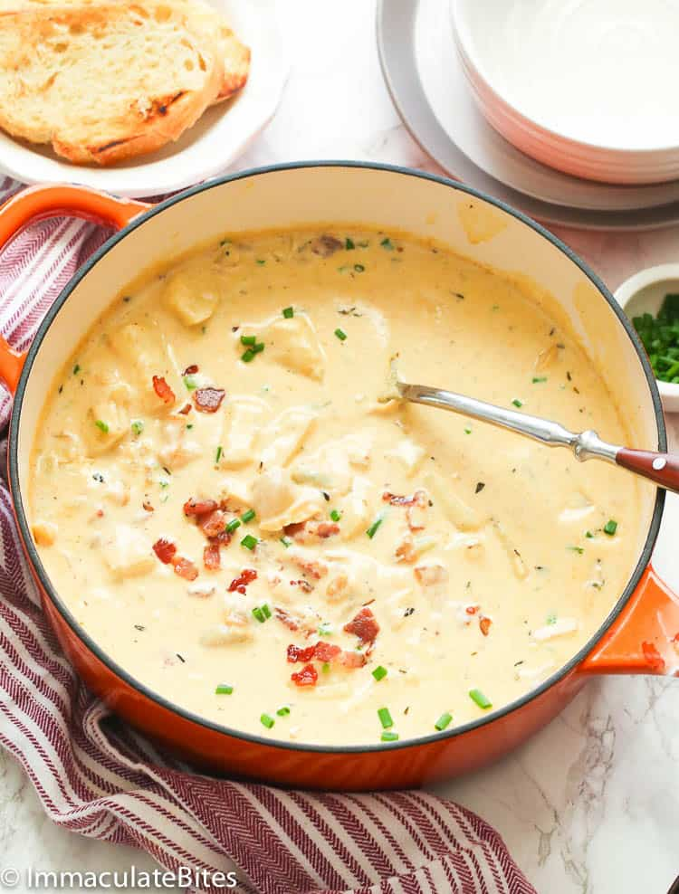

Clam Chowder

A Hearty and Comforting Soup
Hearty, creamy white soup made with fresh clams, potatoes, and smokey bacon. A great comfort food dish, no matter what season it is!
Bacon makes everything better, and it’s a must-have for clam chowder. The smokey saltiness truly enhances the flavor. The drippings and a little butter are amazing.
Ingredients
- 3 cups water
- 5lbs clams
- 4 slices thick bacon, diced
- 1 medium onion, chopped
- 2 stalks celery, finely chopped
- 1 tablespoon minced garlic
- 1 teaspoon thyme
- 1 large bay leaf
- 1 teaspoon Creole seasoning
- 1 tablespoon all-purpose flour
- 1 and a half cups clam juice
- a half cup heavy cream
- 1 cup half and half
- 4 cups potatoes, cubed
- salt and papper to taste
- chives
Steps
How to Boil Clams
- Add about 3 cups of water to a large pot, then add clam, cover, and place over high heat. Cook clams for about 5 minutes. Uncover the pot, stir the clams, and continue cooking for another 3-4 minutes or until they open up.
- Turn off the heat and discard any clams that didn't open. Strain the liquid from the pot through a mesh strainer lined with a coffee filter and reserve it for later. Coarsely chop the clams and set them aside.
How to Make Clam Chowder
- In a large pot over medium heat, cook bacon until crispy. Drain it on paper towels while leaving 1-2 tablespoons of bacon drippings in the pot.
- Next, melt the butter, follow with the onions and celery, and cook until tender, about 5 minutes. Stir in garlic, thyme, bay leaf, Creole seasoning, and flour, and cook for about a minute or until the garlic is fragrant and the flour turns pale golden.
- Pour in the reserved clam broth, cream, and half-and-half while whisking constantly until combined. Stir in the potatoes and bring the mixture to a boil. Then reduce heat and simmer until the potatoes are tender (about 10 minutes).
- Add the chopped clams and cook until heated through (about 2 minutes)—adjust seasoning with salt and pepper to taste. If the chowder is too thick, gradually stir in more half-and-half or clam juice until you reach your preferred consistency.
- Garnish with chopped bacon and chives, and serve immediately with crusty bread or cornbread.
Home